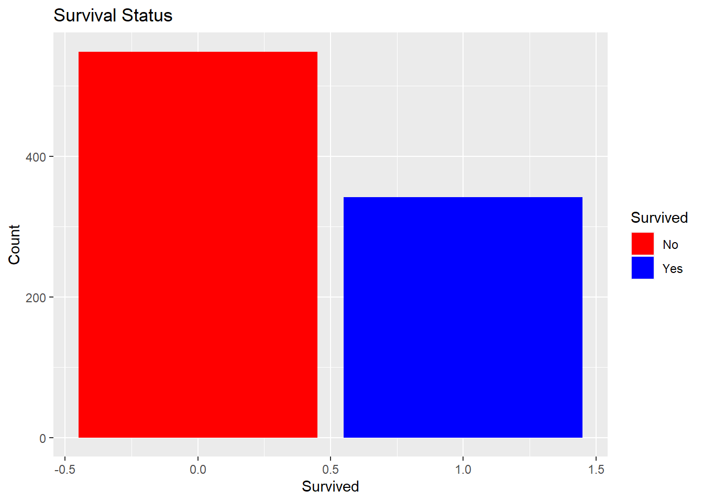
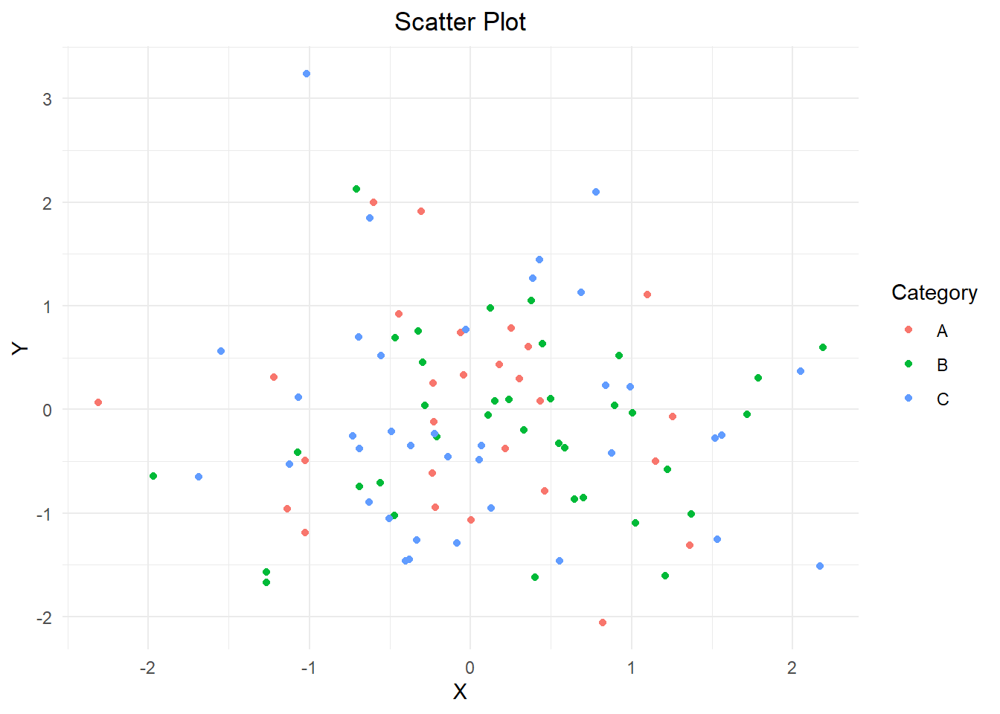
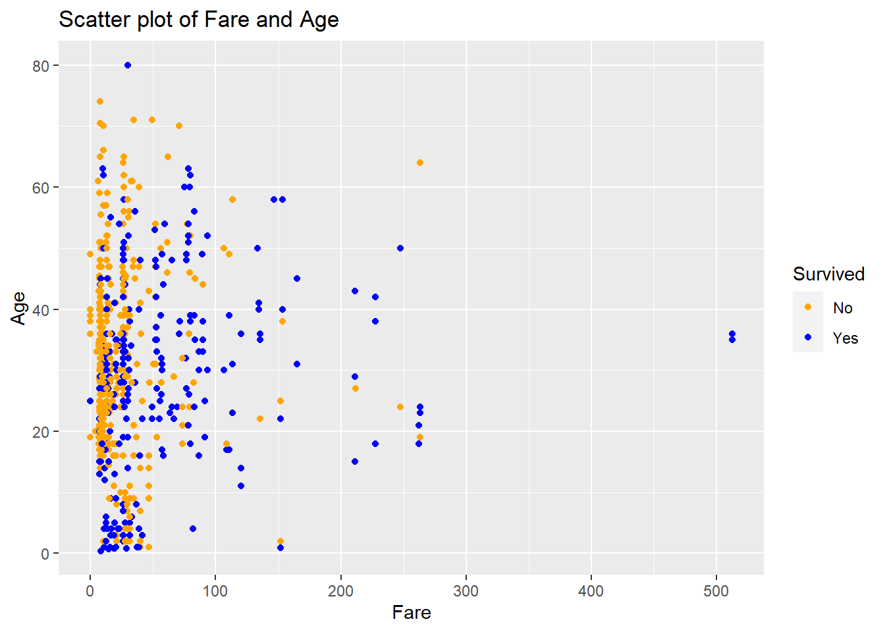
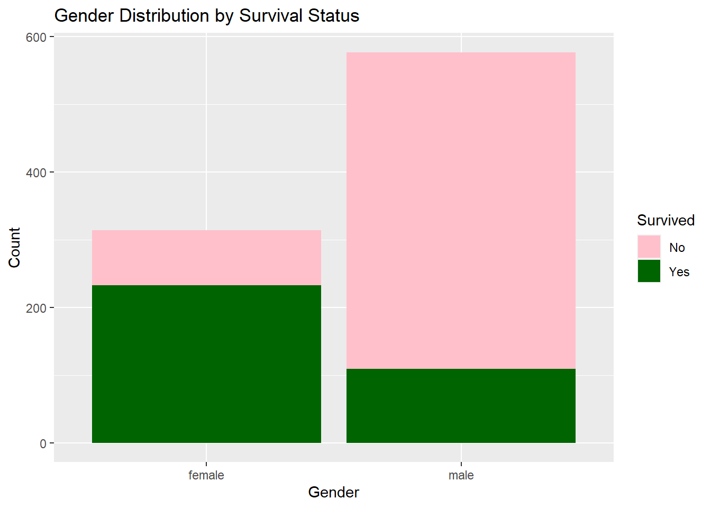
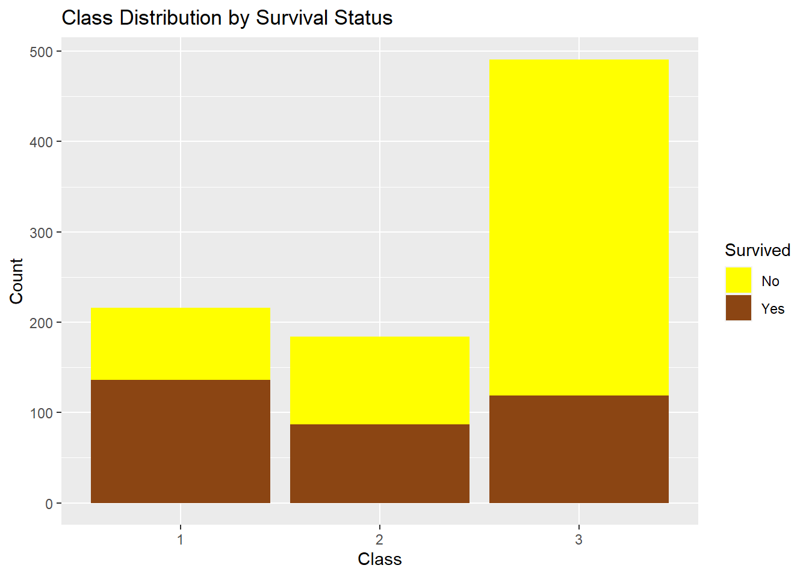

# Load libraries
library(ggplot2)
library(plotly)
Attaching package: 'plotly'The following object is masked from 'package:ggplot2':
last_plotThe following object is masked from 'package:stats':
filterThe following object is masked from 'package:graphics':
layoutlibrary(kableExtra)
# Set a seed for reproducibility
set.seed(123)
# Generate a random dataframe
n <- 100
df <- data.frame(
X = rnorm(n),
Y = rnorm(n),
Z = rnorm(n),
Category = sample(c("A", "B", "C"), n, replace = TRUE),
Value = rnorm(n)
)
# Display the first few rows of the dataframe
kable(head(df), "html") %>%
kable_styling()| X | Y | Z | Category | Value |
|---|---|---|---|---|
| -0.5604756 | -0.7104066 | 2.1988103 | B | 1.4358605 |
| -0.2301775 | 0.2568837 | 1.3124130 | A | -0.4794401 |
| 1.5587083 | -0.2466919 | -0.2651451 | C | 2.2891063 |
| 0.0705084 | -0.3475426 | 0.5431941 | C | -3.0377821 |
| 0.1292877 | -0.9516186 | -0.4143399 | C | -1.0435259 |
| 1.7150650 | -0.0450277 | -0.4762469 | B | 0.2465028 |
# Heatmap
heatmap_plot <- ggplot(df, aes(x = X, y = Y, fill = Value)) +
geom_tile() +
theme_minimal() +
labs(title = "Heatmap") +
theme(plot.title = element_text(hjust = 0.5))
# Scatter plot
scatter_plot <- ggplot(df, aes(x = X, y = Y, color = Category)) +
geom_point() +
theme_minimal() +
labs(title = "Scatter Plot") +
theme(plot.title = element_text(hjust = 0.5))
# Boxplot
boxplot_plot <- ggplot(df, aes(x = Category, y = Value, fill = Category)) +
geom_boxplot() +
theme_minimal() +
labs(title = "Boxplot") +
theme(plot.title = element_text(hjust = 0.5))
# Bar graph
bar_plot <- ggplot(df, aes(x = Category, y = Value, fill = Category)) +
geom_bar(stat = "identity") +
theme_minimal() +
labs(title = "Bar Graph") +
theme(plot.title = element_text(hjust = 0.5))
# Pie chart
pie_chart <- ggplot(df, aes(x = "", y = Value, fill = Category)) +
geom_bar(stat = "identity", width = 1) +
coord_polar(theta = "y") +
theme_void() +
labs(title = "Pie Chart") +
theme(plot.title = element_text(hjust = 0.5))
# 3D Scatter plot using plotly
scatter3d_plot <- plot_ly(df, x = ~X, y = ~Y, z = ~Z, color = ~Category, type = "scatter3d", mode = "markers") %>%
layout(scene = list(aspectmode = "cube"))
# Display the visualizations
print(heatmap_plot)
print(scatter_plot)
print(boxplot_plot)
print(bar_plot)
print(pie_chart)
scatter3d_plot